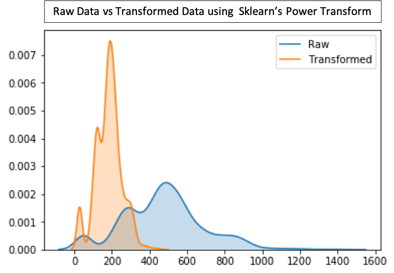
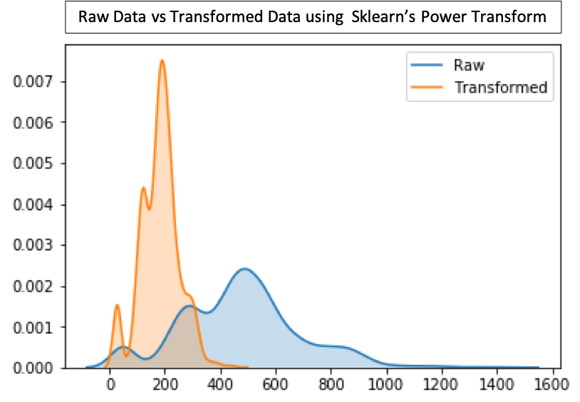
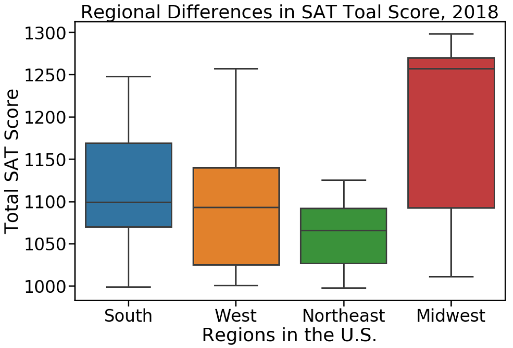

May 30, 2019
Using CNN built in Keras, I was able to process 2,000 +
images of organic compounds based on the functional groups present.
 

A Jupyter Notebook about Sklearn's Preprocessing Module, Power Tranform. This data preprocessing tool is an important method to remove heteroscedasticity from data. However, users must be cognizant that they are changing both values and distribution of their data.

Using 2017 & 2018 ACT/SAT data to detect trends in the participation rates across the U.S. Also, examined Missouri as a case study within the midwest region.
Ladybug House is a non-profit based in Seattle, Washington. To better understand their organization and the community they serve, I have completed an analysis of their 2017 caregiver survey. Furthermore, I have been working to collate and visualize internal data about the organization(i.e Volunteer Hours, Donations Received, Donations Given).
Using classic natural language processing tools such a Count2Vec and Word2Vec combined with either Logistic Regression, K-Nearest Neighbors, or Naive Bayes to classify text as belonging to either the r/Chemistry or r/Biology Subreddit
In collaboration with New Light Technologies and FEMA, we helped build out a series of python scripts which can detect, parse, and map (in progress) outgoing emergency response calls. Using these scripts we were able successfully classify 72+ hrs of audio via Broadcastify.